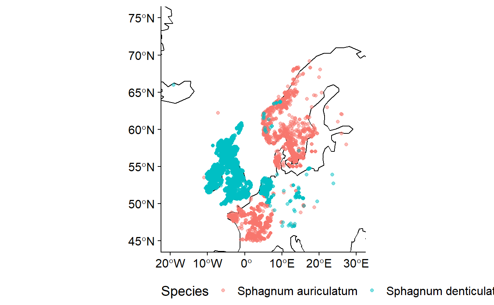
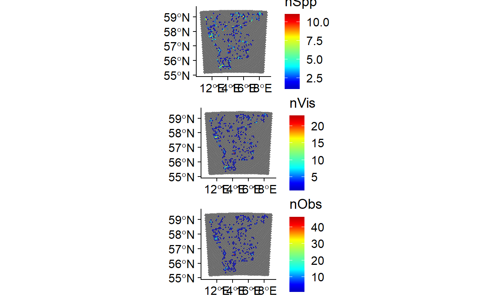

Chapter 3 Data cleaning
Biodiversity data repositories work hard to maintain the accuracy of their holdings. When multiple sources are involved several problems may arise. Here we shall quickly outline what they are and possible solutions.
3.1 Resources
There are a number of libraries, work flows and online resources for automating downloading and cleaning of data. THese include:
3.2 Taxonomies
It is important to be aware of likely taxonomic anomalies prior to working within a region. Checklists are very important, especially if working over several regions / countries. Whilst there are many things that will automatically look for the validity of a name they do not check for the validity of that species occurrence. For example Sphagnum auriculatum Schimp. and Sphagnum denticulatum Bridel, 1826 are both valid names. S. auriculatum is the currently accepted species in Europe but in the British Isles, Ireland and the Netherlands s. denticulatum is the most recorded taxa. Both are legitimate names but they are a synonymy. Both names have been used in Europe but in distinct countries. The current European checklist (Hodgetts et al. 2020) has Sphagnum auriculatum Schimp. as the accepted taxon occurring in Europe. Naive downloading would result in two taxa being present when in fact it is two interpretations of the same taxon. Using data from across the European region without acknowledging this disagreement would impact the results of any research undertaken. For taxa which are known to be capable of dispersing great distances (eg. birds) this becomes even more difficult especially when using community sourced data.
 The example above uses data downloaded from GBIF.
- Data for Sphagnum denticulatum doi: 10.15468/dl.rrp4p4
- Data for Sphagnum auriculatum doi: 10.15468/dl.3yrtw7
Within Sweden there is an agreed taxonomy for all extant taxa accessible through Dyntaxa. Checking of species lists can be done by directly copying species names into a dialogue box or uploading an excel spreadsheet in the correct format.
3.3 Location data
3.3.1 Locality information
Many records have locality information attached to them. Where there are no coordinates attached this information can be used to locate the record to within an area of where records most likely came from. There are functions for which geocoding can be done automatically within R. Geocoding is finding the coordinate for a known locality. These are included in the libraries:
- ggmap requires google API key
- tidygeocoder
Many localities may not be included in the gazetteers associated with these libraries but may be located using online or printed maps. This takes time but may be useful. Unique localities may be extracted, geocoded and then merged back with the data set.
This becomes especially important when extracting records across country boundaries as countries have different numbers of georeferenced observations.| Country | Total Records | % Records with coordinate | % Records without coordinates | |
|---|---|---|---|---|
| AL | Albania | 276 | 7.97 | 7.97 |
| AD | Andorra | 2340 | 7.09 | 7.09 |
| AM | Armenia | 388 | 44.85 | 44.85 |
| AT | Austria | 63417 | 21.75 | 21.75 |
| BY | Belarus | 1669 | 25.40 | 25.40 |
| BE | Belgium | 456751 | 6.90 | 6.90 |
| BA | Bosnia & Herzegovina | 366 | 75.41 | 75.41 |
| BG | Bulgaria | 1148 | 42.33 | 42.33 |
| HR | Croatia | 861 | 57.38 | 57.38 |
| CY | Cyprus | 553 | 66.37 | 66.37 |
| CZ | Czechia | 17873 | 50.46 | 50.46 |
| DK | Denmark | 898583 | 1.28 | 1.28 |
| EE | Estonia | 103057 | 37.07 | 37.07 |
| FO | Faroe Islands | 1588 | 50.25 | 50.25 |
| FI | Finland | 227367 | 9.06 | 9.06 |
| FR | France | 925568 | 8.53 | 8.53 |
| GE | Georgia | 8199 | 39.18 | 39.18 |
| DE | Germany | 196782 | 19.93 | 19.93 |
| GI | Gibraltar | 22 | 100.00 | 100.00 |
| GR | Greece | 1944 | 67.44 | 67.44 |
| HU | Hungary | 3629 | 64.62 | 64.62 |
| IS | Iceland | 42720 | 14.97 | 14.97 |
| IE | Ireland | 131849 | 2.73 | 2.73 |
| IT | Italy | 20483 | 53.33 | 53.33 |
| LV | Latvia | 7250 | 44.18 | 44.18 |
| LI | Liechtenstein | 581 | 3.10 | 3.10 |
| LT | Lithuania | 4867 | 6.47 | 6.47 |
| LU | Luxembourg | 23038 | 1.59 | 1.59 |
| MT | Malta | 89 | 40.45 | 40.45 |
| MC | Monaco | 16 | 87.50 | 87.50 |
| NL | Netherlands | 857837 | 4.15 | 4.15 |
| MK | North Macedonia | 260 | 23.46 | 23.46 |
| NO | Norway | 508434 | 29.99 | 29.99 |
| PL | Poland | 49221 | 31.22 | 31.22 |
| PT | Portugal | 253353 | 9.75 | 9.75 |
| RO | Romania | 1449 | 60.39 | 60.39 |
| RU | Russia | 207613 | 15.16 | 15.16 |
| SM | San Marino | 1 | 0.00 | 0.00 |
| SK | Slovakia | 4401 | 58.71 | 58.71 |
| SI | Slovenia | 3673 | 39.75 | 39.75 |
| ES | Spain | 112576 | 23.32 | 23.32 |
| SE | Sweden | 1153645 | 9.75 | 9.75 |
| CH | Switzerland | 279286 | 4.13 | 4.13 |
| TR | Turkey | 9230 | 94.05 | 94.05 |
| UA | Ukraine | 10476 | 10.74 | 10.74 |
| GB | United Kingdom | 2964596 | 1.42 | 1.42 |
| VA | Vatican City | 3 | 100.00 | 100.00 |
As can be seen from the above example for European Bryophyta (Hornworts, Liverworts and Mosses) the number of records with coordinates vastly varies between countries. For example of 959444 records in Sweden 88.24 % have coordinates in Switzerland of 117132 records only 2.29 % have coordinates.
3.3.2 Coordinate uncertainty
In many cases there is now an abundance of biodiversity data with coordinates. As can be seen from a summary of the above Sphagnum data coordinate uncertainty can vary from less than 1 meter to multiple kilometers.
| Coordinate uncertainty | <1 m | 1-10 m | 10-100 m | 100-500 m | 500-1000 m | 1-5 km | 5-10 km | 10-50 km | >50 km | None |
| Frequency | 335 | 586 | 5320 | 376 | 4619 | 4980 | 4147 | 41 | 2 | 7506 |
In the above example it can be seen that two have uncertainties greater than 50 km and several thousand records that have no known error margin the location. It is important to consider what the error is and removing those records for which the uncertainty is too high. Where this point is will be dependent on the scale of the research.
3.3.3 Coordinate errors
Besides the declared uncertainty of the the coordinates, coordinate errors may occur for a variety of reasons. The library coordinateCleaner is very useful for removing some of the most common errors. These include:
- 0 latitude, 0 longitude
- swapping of latitude and longitude
- The location of the institution holding a preserved sample rather than the location of origin of that sample
3.4 Examples
3.4.1 Data cleaning Cyperaceae in Sweden
In this example I have downloaded the occurrences of the Cyperaceae family in Sweden from SBDI since 2000. This is a single data set from an area with an agreed taxonomy dyntaxa. Our aim here is to download a group of records and clean them to be in such a state than they reflect the question the researcher has in mind.
First we give each record in the assembled data set a unique ID. In this case it could be possible to use the GBIFid. In data sets sourced from multiple sources it is a good idea to create a unique ID related to the data source.
In cleaning data there are a number of dimensions of uncertainty we shall first check.
3.4.2 Taxonomy
In the species column there are records with no Species given in the species column. We then check the scientificName for whether there is useful information there
kable(Carex |>
filter(species == "") |>
distinct(scientificName)) |>
kable_styling(latex_options = c("striped", "hold_position"),
full_width = F)| scientificName |
|---|
| Carex divulsa subsp. leersii (F.W.Schultz) W.Koch |
| Carex L. |
| Carex saxatilis var. saxatilis |
| Carex fuliginosa subsp. misandra (R.Br.) Nyman |
| Carex bigelowii subsp. rigida (Raf.) W.Schultze-Motel |
| Carex buxbaumii subsp. mutica (Hartm.) Isov. |
| Carex buxbaumii f. buxbaumii |
| Carex norvegica subsp. inferalpina (Wahlenb.) Hultén |
| Carex diandra var. major (W.D.J.Koch) Boott |
| Carex buxbaumii var. mutica Hartm. |
| Carex cognata var. congolensis (Turrill) Lye |
| Carex saxatilis subsp. laxa (Trautv.) Kalela |
In this case there are only genre recorded.
We then check for data about species in the locality information for which there are no species data given in the species column. Here there are enough unique values to be checked easily within R. It is possible that in large data sets that there may be very many records for which there is useful information
There are no species data in the locality field and so we begin a vector of IDs that are not at the required data resolution.
We now need to check that the species names in the records that we are using are valid for the area which we are looking at i.e. Sweden. There are several resources out there that do this. As we are looking specifically and solely at Sweden there is Dyntaxa.se. There is also an R package as part of the Swedish Biodiversity Data Infrastructure with examples and documentation. For wider applicability we will export the unique names from the Carex data frame. These will then be copied to the Dyntaxa portal for matching multiple names. The results are checked against the Swedish lists and unknown species or uncertainties are flagged. Names can be copied directly into a box in Dyntaxa or may be imported directly as an xlsx file. Here we shall export just the species names. There are multiple options.
SpeciesNames <- Carex |>
filter(!id %in% unUseful) |>
select("scientificName") |>
distinct()
# library(openxlsx)
#write.xlsx(SpeciesNames,"./data/BDcleaner_Scripts/Example/UniqueCarexTaxa.xlsx")Dyntaxa provides options for any taxononmic uncertainties and lists the species for which no match can be made. Having made selections it exports as a .xlslx file. We can then check what those species for which there is no information about what they are. In this case there are an number of species which are likely to be horticultural, a few taxa which are of hybrid origin which are in the Dyntaxa with the addition of ‘×’ between genus and species, and Carex utriculata a species from North America. This last could be a misidentification of C. rostrata. We will exclude the horticultural and uncertain species. We do this by adding a Species column in the Dyntaxa file and then load that file into R.
library(openxlsx)
SpeciesNames <- read.xlsx("./data/matchCarex.xlsx") # From Dyntaxa
Carex <- merge(Carex,
SpeciesNames[,c("Provided.string","SpeciesDyn")],
by.x = "species",by.y = "Provided.string",
all.x = TRUE)We then add IDs of the rows with taxa which are to be excluded to the unUseful vector. It is possible that there is overlap between these vectors. Rather than overwriting the vector we join the vectors together and use unique to get a vector with no duplications.
###Coordinate Cleaning
We need to extract locality data for rows where there is no lat/lon information to geocode it, producing a latitude and longitude for each locality. This can be carried out in a similar way as for species ie the merging of data frames. This can be also be done automatically in R using the geocode feature of the libraries tidygeocoder or ggmap. Some of these services require an API key (eg. Google). See the documentation for the link for more information
Localities <- Carex |>
filter(is.na(longitude)) |>
select(locality) |>
distinct()
write.csv(Localities,"./data/Localities.csv",row.names = FALSE)For brevity we will simply include the records with no lat/lon info in the unUseful vector. These will ultimately not be used.
Before cleaning the coordinates we simplify the data retaining columns that have information directly related to the collection of the data.
Carex <- Carex |>
select(id,
SpeciesDyn,
longitude,
latitude,
coordinateUncertaintyInMetres,
locality,
# recordedBy,
# countryCode,
# eventDate,
year,
month,
day,
institutionCode,
collectionCode,
catalogueNumber)We then filter out the data rows for which we can not use ie those of too great taxonomic uncertainty. The data may then be cleaned.
There are a number of things to consider when cleaning data:
- How precise are the locations? Coordinate uncertainty ranges in the Cyperaceae of Sweden from 1 m - 30.5 km.
- Are interpreted coordinates sufficient? These interpreted coordinates may imply a greater precision than is necessarily true
- Are the locations likely to be errors? Errors can relate to where a sample is (eg. herbarium location) rather than where it came from.
- Are the locations in the country claimed? This can arise through swapping of lat and lon; duplication of latitude numbers in the longitude; or simply incorrect coordinates being given.
unUseful <- unique( c(unUseful,
Carex |>
filter(is.na(coordinateUncertaintyInMetres)) |>
select(id)
)
)
# kable( t(table( round( Carex$coordinateUncertaintyInMetres, -2))))We shall filter out all records with unknown coordinate uncertainty and all with a coordinate uncertainty more than 12.5 km.
unUseful <- unique(
c(unUseful,
Carex |>
filter(is.na(coordinateUncertaintyInMetres)) |>
select(id)
)
)
unUseful <- unique(
c(unUseful,
Carex |>
filter(coordinateUncertaintyInMetres > 12500) |>
select(id)
)
)We now have an index of records we can’t use owing to incomplete taxonomy or incomplete location information. We save these before cleaning the coordinates.
We first remove the already labeled inaccurate data.
We then use the library CoordinateCleaner to automatically flag coordinates that may be errors. Outputs of this can be a cleaned data.frame or additional columns with doubtful records flagged.
Carex$countryCode <- countrycode::countrycode(Carex$countryCode,"iso2c","iso3c") #converts ISO2 country codes to ISO3
Carex <- Carex |>
filter(!id %in% unUseful)
Carex <- Carex[-which(is.na(Carex$latitude)),]
Carex <- clean_coordinates(Carex,
lon = "longitude",
lat = "latitude",
species = "SpeciesDyn",
countries = "countryCode",
tests = c("capitals", "centroids", "equal", "gbif", "institutions",
"outliers", "seas", "zeros","countries")
)
kable( Carex |>
summarise(`Invalid coords` = sum(.val==FALSE),
`Equal coords` = sum(.equ==FALSE),
`0 coords` = sum(.zer==FALSE),
`capitals` = sum(.cap==FALSE),
`country centre` = sum(.cen==FALSE),
`Country Border` = sum(.con==FALSE),
`outlier` = sum(.otl==FALSE),
`Gbif HQ` = sum(.gbf==FALSE),
`Insitution` = sum(.inst==FALSE),
`Summary` = sum(.summary==FALSE)),
col.names = c("Invalid coords","Equal coords","0 coords","capitals",
"country centre","Country Border","outlier","Gbif HQ",
"Insitution", "Summary"))Checking the distribution of the observations
Sweden <- raster::getData("GADM",
country = "SWE",
path = "./data/",
level = 0)
Sweden_sf <- st_as_sf(Sweden)
BolMar <- ggplot(Sweden_sf) +
geom_sf() +
geom_point(data = Carex |>
filter(SpeciesDyn == "Carex capillaris"),# |>
# filter(.con == FALSE),
aes(x = longitude,
y = latitude)) +
theme_cowplot() +
ggtitle("Carex capillaris")
CarAct <- ggplot(Sweden_sf) +
geom_sf() +
geom_point(data = Carex |>
filter(SpeciesDyn == "Carex acuta"), # |>
# filter(.otl == TRUE),
aes(x = longitude,
y = latitude)) + #,
# colour = .otl))+
theme_cowplot() +
ggtitle("Carex acuta")
grid_Sweden <- makeGrid(Sweden, 25)
OB <- organiseBirds(Carex,
idCols = c("locality"),
xyCols = c("longitude", "latitude"),
sppCol = "SpeciesDyn")
SB <- summariseBirds(OB, grid_Sweden)
grid_Sweden <- st_as_sf(grid_Sweden)
Sweden_sf <- st_as_sf(Sweden)library(colorRamps)
SB_SPat <- st_as_sf(SB$spatial)
nSpecies <- ggplot(data = SB_SPat,aes(fill = nSpp)) +
geom_sf() +
theme_cowplot() +
scale_fill_gradientn(colors = matlab.like2(100))
nVisits <- ggplot(data = SB_SPat,aes(fill = nVis)) +
geom_sf() +
theme_cowplot() +
scale_fill_gradientn(colors = matlab.like2(100))
nObs <- ggplot(data = SB_SPat,aes(fill = nObs)) +
geom_sf() +
theme_cowplot() +
scale_fill_gradientn(colors = matlab.like2(100))
plot_grid(nSpecies, nVisits, nObs, ncol = 1)